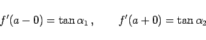
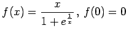
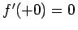

Inhalt Index DeskTop Bronstein

 Differentialrechnung Differentiation von Funktionen einer Veränderlichen Differentialquotient
Differentialrechnung Differentiation von Funktionen einer Veränderlichen Differentialquotient


Wenn für einen Wert x =a der Grenzwert (6.1) nicht existiert, dafür aber der links- bzw. rechtsseitige Grenzwert, dann wird dieser Grenzwert links- bzw. rechtsseitige Ableitung genannt. Da die Kurve an der Stelle zwei Tangenten mit den Steigungen
|  | (6.3) |
besitzt, kennzeichnen die beiden Ableitungen, geometrisch gesehen, einen Knick der Kurve (linke Abbildung).
| Beispiel |
|
:An der Stelle x=0 existiert kein Grenzwert der Art (6.1), jedoch gibt es einen linksseitigen und einen rechtsseitigen Grenzwert f'(-0)=1 und , d.h., die Kurve besitzt hier einen Knick (rechte Abbildung). |